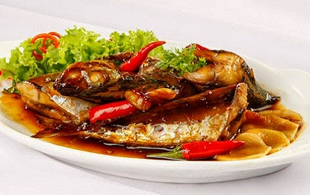

CẨM NANG SỨC KHỎE
7 điều cần tránh sau bữa ăn

Để cơ thể khỏe mạnh và hấp thụ tốt các chất dinh dưỡng trong thực phẩm, bạn cần tránh một vài việc ngay sau bữa ăn[...]
- Thực phẩm hằng ngày có thể hại người!
- Bí kíp để có giấc ngủ ngon
- Thực phẩm cho người bị tiểu đường
CHẾ BIẾN THỰC PHẨM
Khéo chọn và chế biến thịt bò

Thịt bò và thịt trâu khá giống nhau, và nếu không tinh mắt bạn có thể bị lừa hoặc mua phải loại thịt kém chất lượng. Đơn giản nhất là bạn sẽ [...]
- Nguyên tắc chế biến thực phẩm an toàn
- Mẹo phân biệt thịt bò và thịt trâu
- Cách chế biến thịt bò

DINH DƯỠNG
lí do bạn nên ăn cá nhiều hơn
 KIẾN THỨC THỰC PHẨM
KIẾN THỨC THỰC PHẨM
Mốt kinh doanh thực phẩm sạch online
CHUYÊN MỤC THỰC PHẨM
- >>Bí quyết chọn cá tươi
- >>Chế biến thực phẩm an toàn
- >>Tư vấn chọn mua thực phẩm
CHUYÊN MỤC CHẾ BIẾN
- >>Cẩm nang vào bếp
- >>Cách làm món canh chua dân dã
- >>Món ngon cuối tuần
CHUYÊN MỤC KIẾN THỨC
- >>Kiến thức bảo quản thực phẩm
- >>Bảo quản thực phẩm tự nhiên
- >>các loại ngũ cốc giàu đạm